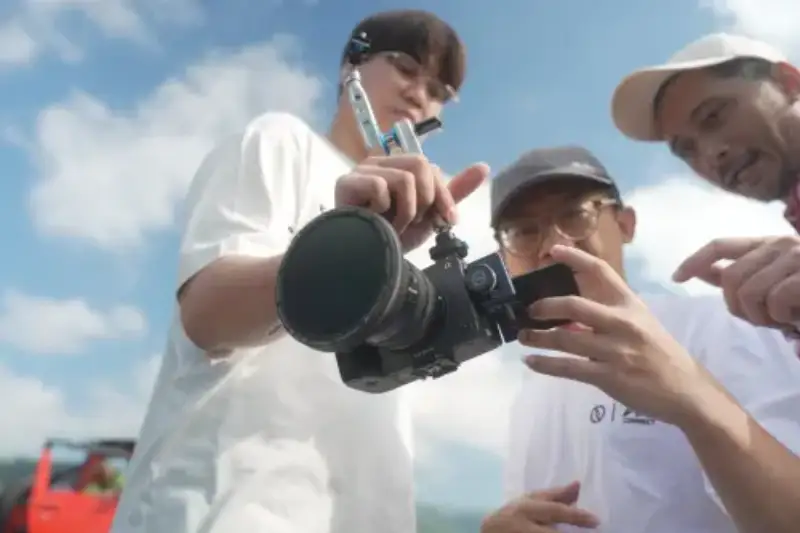
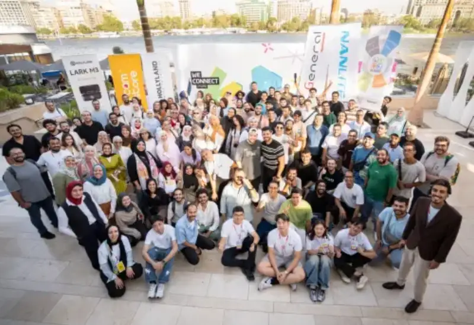

portant;">A way to measure how deeply a Chinese tech brand goes global,is whether it enters the daily routine of global content production.,Behind the scenes of the new Spider-Man film (Spider-Man: Brand New Day) , an interview with the Odyssey crew BBC News , and the set of this summer hit Welcome to the Dragon Restaurant , , look like different scenes, yet MOMA gear appears in all of them,,, , serving on-set talkback and interview audio.
portant;">When a pro tool goes global, it crosses not only market borders,,but also existing roles and habits. Whether the product fits this workflow decides whether a one-time trial becomes steady use.,HOLLYLANDThe key to MOMA global push lies here: how technology becomes a daily part of the creative process, and how usage becomes brand trust.:,
portant;">
portant;">Deep roots in pro scenes, global capability,
portant;">MOMA is a tech brand built on R&D. Its parent company was founded in ,2013 . The MOMA brand was established in 2017,MOMA , when it began global brand marketing. The company started with image transmission and talkback, then expanded into wireless mics, and entered live-stream cameras in ;2018,HOLLYLAND,,2023 .
portant;">This path ties closely to content production: image transmission sends the picture to the monitor, talkback keeps the team aligned, mics capture sound, and live cameras serve imaging and broadcast.:,,,Behind this expansion is a move from solving team production issues of transmission and communication to meeting the shooting, audio, and live needs of individual creators. Wireless audio-video tech ties the products together and widens the user base.,,,
portant;">Today, MOMA products reach more than 160 countries and regions, serving over , pro users, with 600 partners. Its products have won international awards such as the Red Dot, ,2000iF design award, and DGP gold award. This breadth shows how far MOMA products have gone. For a pro-tool brand, a wide user and partner network also means access to more regions and creative needs, feeding steady iteration.,,,
portant;">
portant;">Technical confidence comes from understanding the scene,
portant;">Back to the sets of the new Spider-Man film and Welcome to the Dragon Restaurant, talkback sits in real-time, multi-role collaboration. Directors, camera, and lighting operators work gear while exchanging information. MOMA full-duplex wireless headset talkback for film lets members listen and speak at once, hands-free. This design embeds communication into the act of shooting, and its value ties directly to how the team works.,,,,,
portant;">Interview needs differ.BBC NewsIn the Odyssey crew interview, a lapel mic on the person captured sound as the conversation flowed. From on-set talkback to person audio, pro capability is placed in different form factors, fitting team work and individual expression. This shows that professional value lies both in audio-video performance and in the fit with workflow.,LARK M2,,,,,
portant;">The same scene awareness shows in new products.LARK M3Up to four transmitters and four receivers let several on-camera people each wear a mic, and multiple cameras share the same sound through receivers, cutting repeated wear and setup. At MOMA anniversary global brand day in Bali, it was used for group shooting and shared audio in co-creation, supporting different cameras with one source.,,,9WE CONNECT,LARK M3,2026The MELO P1 launched in , extends the consumer line, integrating a handheld mic, sound card, wireless monitor earphones, and remote into a charging case for , singing and live streaming. Both simplify creator prep through device coordination and feature integration.K,
portant;">

portant;">Creators adjust gear at the Bali co-creation event.
portant;">MOMA keeps exploring mic use cases.9In 2 , the LARK A2×WorkBuddy co-branded model links the mic to , voice input, offering a concrete case for a sound tool entering the AI workflow. From shooting audio to voice interaction, tools find new room. For MOMA, this exploration stays about expression: however users want to input, record, and organize ideas, the product must answer that need.,AI,,:,
portant;">Cultural confidence builds equal dialogue,
portant;">Gear solves how to record; cultural communication is about what to record. For creators in different markets, a brand must understand both technical needs and the life context behind their subject choices and storytelling.,,,
portant;">This year Bali event offered a window. Chinese and foreign creators first experienced fire dance, cooking, and coffee culture, then co-wrote scripts and shot. The Chinese creator Wang Xiaochao shared Chinese culture with foreign guests. What matters here is the order: experience together, then exchange observations, then form work. Chinese creators tell their own stories and listen to others.WE CONNECT,;:,,,
portant;">This gives the tagline Right away, wonderful a concrete meaning: the brand provides tools and a space to meet, while creators keep the choice of subject and expression. Chinese cultural confidence here means stating its own ideas clearly, respecting other life experiences, and letting Chinese stories enter a two-way exchange. Embrace This Moment”:,,,,
portant;">
portant;">Ecosystem confidence grows user ties,
portant;">Over 600 partners. Its products have won international awards such as the Red Dot, ,,,
portant;">

portant;">WE ConNECT 2026Overseas creator event.
portant;">“Shoot Now links practice through national touring meetups; Super Friends is the brand-user dialogue; the youth director program and academic support program serve young directors and film schools worldwide. They connect creators at different growth stages, so brand contact is not limited to buying gear.,“;FIRSTHOLLYLAND,,
portant;">These practices deepen two kinds of ties. The brand gets close to users through industry talks and user events, and extends thecare cycle through creative and educational support. Creators meet other users and exchange experience. Users are both gear users and peers, so brand value reaches beyond tools into professional growth.,;,,
portant;">Word of mouth and loyalty build at the crossing of these ties. Peers share whether gear works on real projects, and the brand receives the needs and problems of different sets. When feedback feeds products and services, new experience becomes the next topic. This user-brand-user loop shows that long-term ecosystem value lies in the steady flow of experience and needs, not a one-off event.,;,,,
portant;">
portant;">From market coverage to daily trust,
portant;">From on-set talkback and audio to user support around the creative cycle, MOMA global path shows brand, technology, and users supporting one another. Hard tech solves concrete creative problems, while human care shows in attention to expression, cultural difference, and creator growth. The mission technology for easy expression and a rich inner world, and the tagline right away, wonderful, share a goal: let pro ability serve human expression, and let the brand earn trust as it keeps supporting creation.,,,, Embrace This Moment”,:,
portant;">For Chinese tech brands, competition after entering overseas markets comes down to why choose you next time. The concrete problems gear solved, the experience service left, and the shared usage among peers together form that choice. The value of the MOMA case lies in how product power, through daily use and steady exchange, turns into lasting brand trust.,,,,,